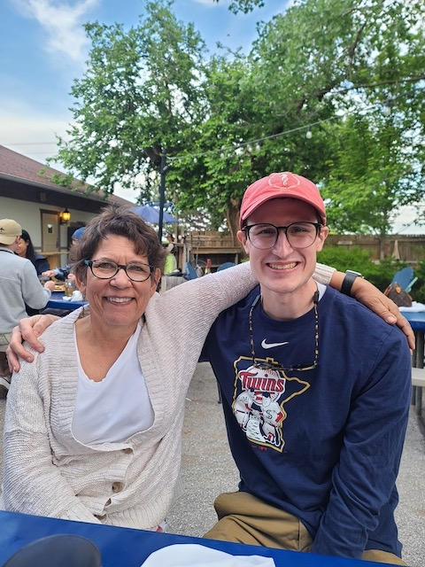

About me

I first developed an affinity for aquatic critters while growing up in southeast Minnesota near the intersection of two unique ecoregions: the Big Woods and the Driftless Area. Spending much of my youth fishing and exploring riverbanks gave me a great appreciation for freshwater habitats and led me to enroll in the Fisheries, Wildlife, and Conservation Biology program at the University of Minnesota. It was during one of my undergraduate courses that I really became “hooked” on freshwater mussels. I had collected shells in the past but didn’t give much thought to the biology of these animals. After learning more about mussels, it did not take me long to become engaged in research and conservation activities. In June 2020, I started my PhD in the laboratory of Dr. Caryn Vaughn at the University of Oklahoma and completed my PhD in May 2025. Outside of science, I enjoy live music, exploring the U.S. by rail, landscaping with native plants, and just about any outdoor activity (especially biking and canoeing). I also volunteer with several local conservation organizations like Friends of the Mississippi River and help The Prairie Enthusiasts with prescribed burning.